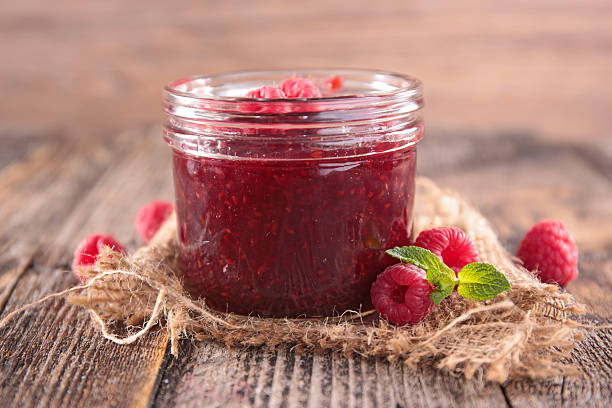

Tipos de mermeladas
Mermelada de piña
Mermelada de guayaba
Mermelada de fresa
Mermelada de tomate
Mermelada de frambuesa

¿Qué es la mermelada?
Beneficio de la mermelada
¿Qué tan sana es la mermelada?
Tipos de mermeladas.
¿Quién no debe consumir mermelada?
¿Qué enferedades causa la mermelada?